A Bayesian Framework for Sequential Scene Parsing
by Jahngiri et al.
Develop a goal for scene parsing that incorporates expected contextual information during object classification
There is a lot of discarded information that is naturally modelled by a Bayesian framework with prior information.
For instance, consider a dining table. There are several collections of objects that occur together and have regular patterns to their relationship:
The method is a hybrid of a learning-based and model-based approach.
Images patches are parsed using DNNs which output a variety of classifiers. We use these classifiers to build a (Dirichlet) model to look at the posterior distribution of the classifiers after considering the prior information.
The Information Pursuit strategy can be intuitively thought of as a more complex analgoue of the game 20 Questions.
The goal of the strategy is to sequentially query image patches in an order that results in a large decrease of (Shannon) entropy while balancing the likelihood that the query can be successfully answered.
In 20 Questions I might ask you if you the person under consideration is Male/Female first, because it leads to a large reduction in the possible classes while being simultaneously easy to answer accurately.
I could also ask you if they were born in September. If I knew the birthdates of a number of celebrities, this would be helpful. However, it is highly unlikely that the person answer the questions would know the answer.
The goal is to reconstruct as much information about \(Z \in \mathcal{Z}\) from the observation of \(I\).
Information about \(Z\) is supplied by noisy queries from the specified set of queries, \(\mathcal{Q}\). \(Y_q, q \in \mathcal{Q}\) is the answer to these queries, and is determined by \(Z\) and \(W\), \(Y_q = f_q \left( Z, W \right)\).
\(Y_q\) provides a small amount of information about \(Z\), and is referred to as an "annobit".
The states of the annobits are progressively estimated from a matched family of image-based predictors, \(X_q = h_q \left( I \right)\). We also assume that \(Y_\mathcal{Q}\) is sufficient for \(X_\mathcal{Q}\), in the sense that \[P \left(X_\mathcal{Q} | Z, W \right) = P \left( X_\mathcal{Q} | Y_\mathcal{Q} \right)\]
Let \((q_1, ..., q_k)\) be an ordered sequence of the first k distinct queries with answers \((x_1, ..., x_k)\). The event, \[\mathbf{E}_k = \left\{ X_{q_1} = x_1, ..., X_{q_k} = x_k \right\}.\]
The IP strategy is defined recursively: \[q_1 = argmax_{q \in \mathcal{Q}} \mathcal{I} (X_q, Y_\mathcal{Q}), q_k = argmax_{q \in \mathcal{Q}} \mathcal{I} (X_q, Y_\mathcal{Q} | \mathbf{E}_{k-1}).\]
Where \(\mathcal{I}\) is the mutual information determined by the joint distribution of \(X_q\) and \(Y_\mathcal{Q}\).
\[\mathcal{I} (X_q, Y_\mathcal{Q} | \mathbf{E}_{k-1}) = H(X_q | \mathbf{E}_{k-1}) - H(X_q | Y_\mathcal{Q}, \mathbf{E}_{k-1})\]
This implies the next question should be chosen such that:
The two criteria are balanced though, so one could accept a relatively poor classifier if it is highly unpredictable.
The image is chopped into several hierarchical layers into chunks called annocells. Each cell is given its own index and associated set of annobits and classifiers.
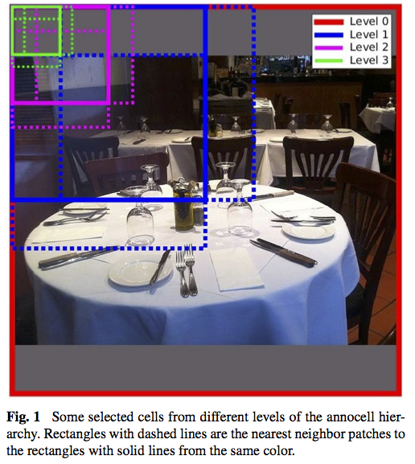
The scene model, \(P(Z|S)\), is conditioned on \(S\), the projective reference plane for the 3D table representation in the image plane. The representative plane is partioned into small cells (5cm by 5cm) and the distribution of \(Z_i = (C_i, L_i)\), class and location, is discretized on this grid. The discretized version of \(Z_{j,c}\) is equal to 1 iff an object of category c is centered in cell j.
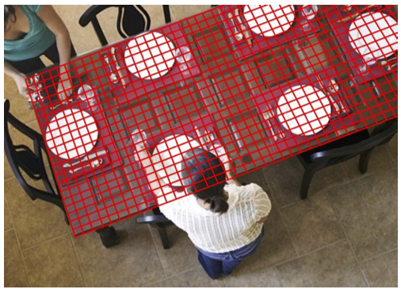
The scene model follows a Gibbs distribution, \[p(z) \; \alpha \; exp(\mathbf{\lambda} \phi (z)),\] where \(\phi(z)\) represents two types of features:
Indicate whether or not an instance from a given category is centered anywhere in a given set of cells.
\(\phi_{J,c}(z) = max \left( z_{j,c}, j \in J \right)\)
Considered at the three levels of granularity.
Products of two middle-level existence features: \[\phi_{J_1, c_1, J_2, c_2}\left( z \right) = \phi_{J_1, c_1} \left( z \right) \phi_{J_2, c_2} \left( z \right)\] that signal the co-occurence of those features of interest.
To reduce complexity, only considered if annocells are "close enough".
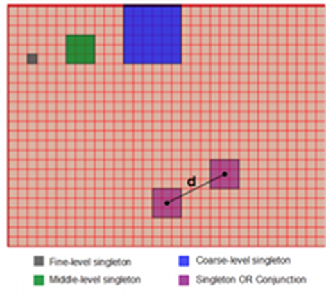
Learning the model requires a very large number of annotated examples. The authors had 3,000 images, but it was insufficient. They built a scene generation model to create an unlimited set of new synthetic scenes with annotations.
The generative model is modeled simply by a Markov Random Field. First, they create spontaneus instances by placing some objects randomly in the scene. Then they allow these placements to generate ancillary objects, whose type and location are drawn from the conditional distribution of the initial object. This process terminates when no children are generated, or an upper limit has been reached.
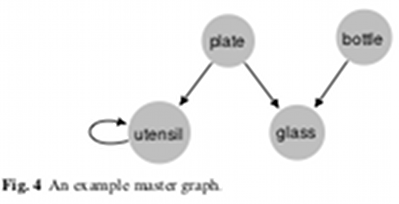
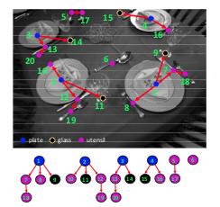
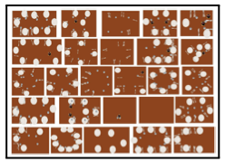
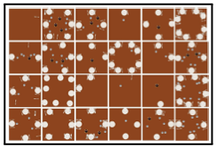
The weights of the edges are learned using the Monte Carlo version of the Stochastic Expectation-Maximization algorithm.
The sampling algorithm is based on based on a Metropolic-Hastings sampling strategy conditional on a given scene geometry.
The authors worked under the assumption that the classifiers are independent given \((Z, S, W)\), the image, scene, and camera properties. As well as for a given query, the condition distribution of \(X_q\) given these variables depends onl y on \(Y_q\), the set of annobits for that query.
Trained three deep CNNs:
From the output of the first CNNs, the authors fit a Dirichlet model, assumed to be independent of the annocell, for \[P \left( x^{type} | y^{type} \right)\] where type is either category or scale models.
For a given cell, returns a softmax vector of scores \(X^{cat}\) corresponding to a proportional confidence level about the presence of at least one object from the categories considered.
Nonnegative and sum to 1, but are not probabilities of existence, since the events can co-occur.
The unit interval is broken into several regions, and the CNN estimates the likelihood that a given object's size falls into one of the regions.
An object's scale is defined to be the ratio of its longest side to the patch size.
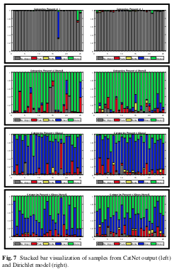
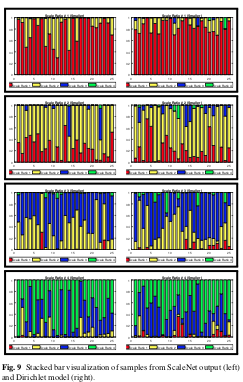
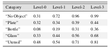
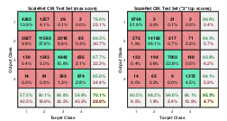
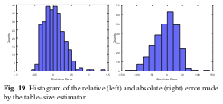
At each step of IP, two most informative questions corresponding to annobits with maximum mutual informations were asked, i.e., two patches were processed by CNNs.
The IP selection criteria tries to strike a tradeoff between the information gain of questions and the accuracy of the classifier at providing an answer to them.
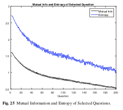
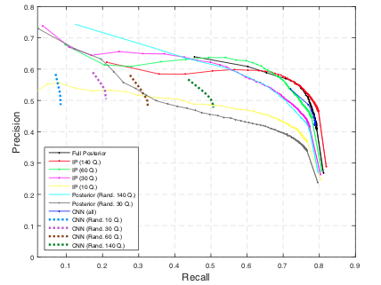